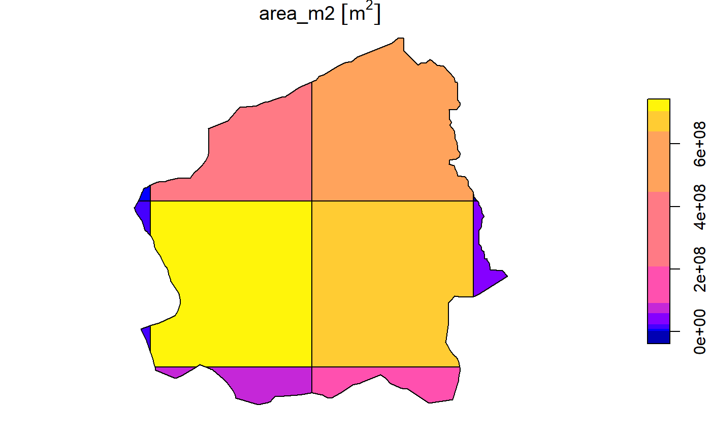
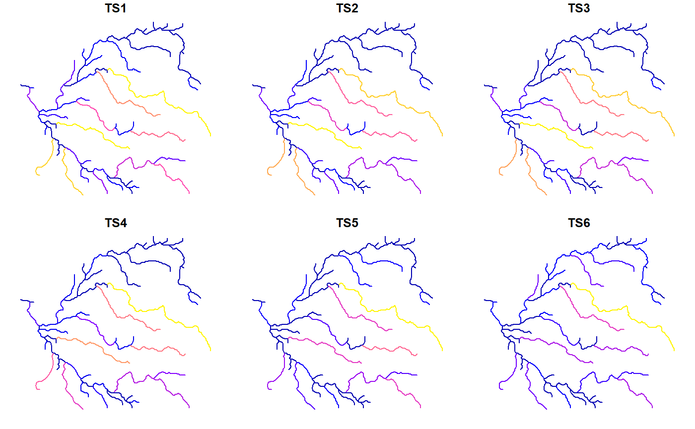

hydrostreamer is an R package to downscale spatial runoff data products by spatial relationship between the areal unit in runoff data, and an explicitly represented river network. In practise the downscaling occurs by dividing the value of runoff to all those river segments intersecting the areal unit (of runoff) using a numerical attribute for weighting. These attributes can be, for instance, length of the intersecting river segment, Strahler number, or area of the segment-specific catchment.
 Downscaling in hydrostreamer can be done either using river segment lines, or by their catchment areas. This is an example in case of a gridded runoff product, but the areal units can be arbitrarily shaped
Downscaling in hydrostreamer can be done either using river segment lines, or by their catchment areas. This is an example in case of a gridded runoff product, but the areal units can be arbitrarily shaped
To install hydrostreamer, use devtools::install_github() in RStudio. You should have R version higher than 3.4.0 for the package to work properly.
devtools::install_github("mkkallio/hydrostreamer")Basic usage
hydrostreamer workflow occurs in four steps:
- Convert the runoff timeseries to a HSgrid object (a polygon network)
- Compute weights for each river segment
- Compute segment specific runoff
- Apply river routing
Minimum data requirement is a runoff timeseries, either as polygons or in raster format, and a river network. The river network needs to be a ‘clean’ set of connected linestrings, meaning that connected river segments must share a node at either end of the segment. In addition, the digitizing direction is semantically important: the river segment must be drawnfrom upstream to downstream. Using a polygon of an area of interest is not an absolute requirement, but is recommended to avoid erroneous runoff assignments at the border areas.
First, load exaple data to R:
library(sf)
library(raster)
library(hydrostreamer)
data(river)
data(basin)
runoff <- brick(system.file("extdata", "runoff.tif", package = "hydrostreamer"))1. Convert raster timeseries to a polygon grid
If the runoff timeseries is in a raster format, it needs to be polygonized using polygrid_timeseries(). The process adds two columns: gridID with unique ID for each polygon, and area_m2, the surface area of each polygon. Providing an area of interest clips the polygons to the area.
grid <- polygrid_timeseries(runoff, aoi=basin)
plot(grid[,"area_m2"])
2. Compute weights for each river segment
Next, we weight the river segments within each segment, so that the weights of segments within a polygon add to 1. In hydrostreamer this can be done by
- Catchment area of each river segment by
- user provided catchments
- drainage direction delineated basins (for river networks derived from them)
- Medial axis delineated basins (Voronoi Diagram created from the river network)
- River segment properties
- divide runoff equally to all intersecting segments
- use stream order to weight the segments
- use segment length for weighting
- user provided attributes
Here, we use river segment Voronoi diagram as the delineated basins. For information on the other options, see help(compute_weights).
v.weights <- compute_weights(river, grid, "area", aoi=basin, riverID = "ID")3. Compute segment specific runoff
With the weights computed, we can assign specific runoff to each river segment.
v.runoff <- compute_segment_runoff(v.weights)
plot(v.runoff[,5:10])
4. Apply river routing
The last step is to accumulate flow downstream. The previous step only assigned the grid cell value to the streams. However, often we want to know the discharge at certain points of the river to create a timeseries.
hydrostreamer currently (v. 0.2.0) only implements the simplest possible river routing, instantaneous flow, by adding all runoff to every segment downstream, at each timestep. This is an overly simple scheme, and there are plans to add more sophisticated river routing algorithms to the package.
v.flow <- accumulate_flow(v.runoff)
plot(v.flow[,4:9])
Development
hydrostreamer provides simple tools to downscale off-the-shelf runoff products without performing additional modelling. The package is under rapid development. Some planned upcoming features in future releases include:
- Support for ‘Spatial’ class objects in addition to ‘sf’
- More utility functions
- General optimisation and parallelisation of the code
- Add more advanced river routing schemes, and investigate the possibility to provide an interface to high performance routing applications, such as RAPID, or mizuRoute.
- Analysis and plotting functions supporting observation data
- Optimising an ensemble of several runoff products based on observed flow
- Uncertainty estimation
License
The MIT License (MIT)
Copyright (c) 2018 Marko K. Kallio
Permission is hereby granted, free of charge, to any person obtaining a copy of this software and associated documentation files (the “Software”), to deal in the Software without restriction, including without limitation the rights to use, copy, modify, merge, publish, distribute, sublicense, and/or sell copies of the Software, and to permit persons to whom the Software is furnished to do so, subject to the following conditions:
The above copyright notice and this permission notice shall be included in all copies or substantial portions of the Software.
THE SOFTWARE IS PROVIDED “AS IS”, WITHOUT WARRANTY OF ANY KIND, EXPRESS OR IMPLIED, INCLUDING BUT NOT LIMITED TO THE WARRANTIES OF MERCHANTABILITY, FITNESS FOR A PARTICULAR PURPOSE AND NONINFRINGEMENT. IN NO EVENT SHALL THE AUTHORS OR COPYRIGHT HOLDERS BE LIABLE FOR ANY CLAIM, DAMAGES OR OTHER LIABILITY, WHETHER IN AN ACTION OF CONTRACT, TORT OR OTHERWISE, ARISING FROM, OUT OF OR IN CONNECTION WITH THE SOFTWARE OR THE USE OR OTHER DEALINGS IN THE SOFTWARE.